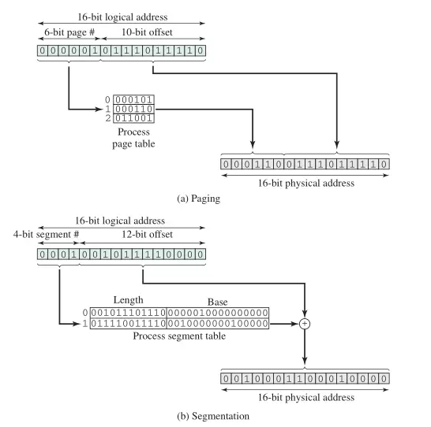
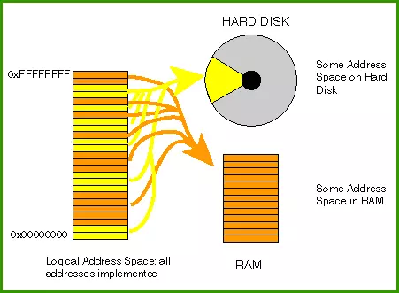
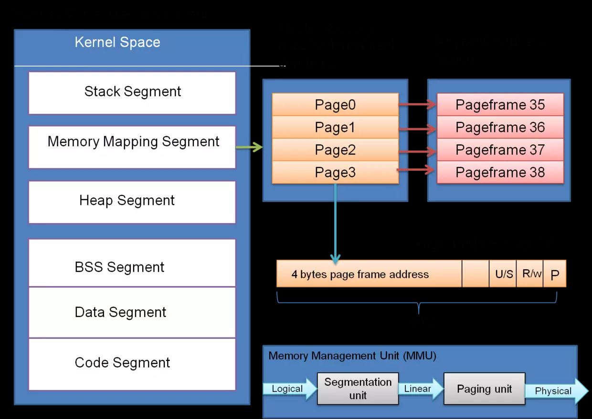

本文转载自：计算机系统012 - 操作系统之内存管理
内存管理
所谓内存管理，其最基本的操作就是由CPU把程序装入到内存中执行。远古批处理时代，进程独占各种计算机资源依次执行，因此只要小于可用内存总大小（主要是除去操作系统本身所占内存）的进程均可加载运行。随着操作系统的发展，提高CPU利用率和降低平均响应时长成了两大主流方向。前面的文章中反复提到提高CPU利用率的最有效方法就是加载多个进程到内存中，通过在一个进程执行I/O操作期间切换至另一进程，避开阻塞等待。也就是说，同一时刻加载入内存空间的进程数越多，可供选择的进程就越多，就越有机会避开I/O操作等待时间，那么，剩下的问题就是，该如何增加加载入内存空间的进程数。
可加载到内存空间的进程总数受到两方面影响：
- 物理内存总量：硬件上内存空间总量总是有限的，如早期计算机只有256MB内存
- 单个进程占用内存空间数：为了完成更复杂的功能、呈现更好的视觉效果等，程序日益复杂，运行所需内存空间与日俱增
简而言之，内存与进程间的态势是供不应求。针对问题找方法，可选的解决方法有如下两种：
- 增大物理内存总量
增大物理内存总量，需考虑硬件技术以及经济能力两方面。硬件技术发展总有其时代局限性，即使到今天，民用计算机中单条内存16GB的容量已经是很高端的了，而这一级别的内存条目前均价为600RMB左右。以台式机为例，插满4根组成64GB需要成本约2400RMB，价格不菲。而且这只是内存而已，毕竟计算机整体性能还和其他如CPU、硬盘、显卡等各大烧钱部件息息相关。因此不管是从硬件技术还是经济效益来考虑，增大物理内存总量这条路潜力很有限。 - 降低单个进程运行所需内存空间
能用软件实现的功能，只要对效率上要求不十分严格，实现起来的灵活性和性价比要比单纯扩展硬件要高得多，对于内存的使用也同样如此。要想降低进程所需内存空间，只有一种方法，那就是只加载进程中当前可能执行到的部分。
局部性原理
从物理学上讲，局部性原理认为一个特定物体只会受到其直接相关环境影响。而对应到计算机系统中，硬件只会与其有直接电气线路相连的其他硬件交互，软件程序中，每一个指令也只会与其附近一段区域内代码相关联。讲句人话就是，硬件交互需要电气接触，软件执行通常只会牵扯到附近代码，毕竟编码过程中本身就会将问题进行模块分解。对比例证，阅读理解文学作品时对于单句的理解需结合上下文，商品使用说明书同样是分模块说明的。
局部性原理为前一小节提出的“只加载进程中当前可能执行到的部分”的解决方案提供了理论支撑。虽然进程中包括了很多代码和数据，但执行过程中CPU是以顺序执行读取到的指令的，假如可以保证每条指令只和附近一些指令相关，那就可以只加载一定量的指令就可以实现进程内部的顺序执行，对于数据部分也是同样的道理。实际应用中，如现在的游戏程序，动辄十几GB、甚至几十GB，其实内部大多是动画CG。如果执行程序的前提是必须全部加载，那么很少有硬件能够成功运行该游戏程序；但基于局部性原理，运行时只加载当前章节或场景必需的代码数据即可，只有当需要切换到其他章节、场景时，再动态加载对应代码数据。
重定位
虽然根据局部性原理，使得同时可以加载入内存的进程总数有所提升，但内存总量始终是不能改变的，而进程运行过程中也随时可能增减所需内存。要想保持进程总数甚至加载更多进程，在有增的同时就势必有减。然而增减终归要有源头，而这个源头就是辅助存储设备，也称为二级存储器，典型设备为磁盘Disk。
当内存中没有富余内存空间时，就必须将一部分进程使用到的内存空间减少。这些空间可能包括进程存储原始数据的空间，也有可能包括运行时动态信息的空间，为了再当重新切换回这些进程时可以正确执行，如同进程切换一样，需要将所减少的空间进行存储，而存储的位置只有容量更大的磁盘空间。从内存保存到磁盘、或是从磁盘重新加载回内存的操作就叫做交换。
内存管理中，只保证提供内存空间，并不保证每次提供的内存空间在物理上位置都一样。例如，进程被交换到磁盘后再次加载，所加载到的位置几乎不会与被交换出内存时所处的位置一样。这也是为了保证各进程所需的不同内存空间总数同时，尽可能减小外部碎片（可视为进程间连接处不能使用的空间）。既然位置发生了变化，但进程还要继续执行，那就只能通过重定位技术来Cover掉这个差异。

单纯讲重定位会过于抽象，要理解这个概念，首先要对几种地址类型进行区分：
- 物理地址/绝对地址，是数据在内存中的实际位置，通常物理地址是一组连续线性递增的地址空间
- 逻辑地址，指与当前数据在内存中的物理分配地址无关的访问地址，在执行对内存的访问之前必须先把它转换成物理地址
- 相对地址，相对于某已知点（通常是程序的开始处）的存储单元
由于不同操作系统对于进程的具体定义各有差异，内核所使用的调度策略也有所差别，因此进程所能分配到的地址以及地址空间位置的关系也均有所不同。这样一来，进程运行过程中，自然不能通过物理地址来查找指令、数据等信息，为了避免硬件地址对其影响，进程中使用逻辑地址作为分布依据。要想实现这项功能，操作系统中就必须维护一份逻辑地址与物理地址间的映射表，从而使得操作系统可以将进程运行时的逻辑地址转换为物理地址，进行存取。
典型进程执行过程
综合前文所述，如在进程执行中选择只加载（或是尽可能少）必需代码、数据，那么典型进程执行过程如下：
- 操作系统读取包含程序开始处的一些字节
- 由于进程刚执行，只有小部分在内存中，因此会因为无法读取到后续指令、数据而触发大量中断
- CPU收到中断后移交控制权给操作系统
- 操作系统确定数据在磁盘上的位置
- 读取数据至内存中
- 返回至原进程，继续执行
这样一段时间后，通过预测等CPU技术，将进程可能执行的指令数据提前加载到内存中，中断将很少触发，整体执行过程趋于稳定，直到进程执行结束。
交换单元
前一节中整体介绍了内存管理中增加内存中可加载进程总数的有效解决方法，但对于交换的具体细节并没有做过多说明，这里就从交换单元的角度来看看交换过程相关问题。
通过硬件部分的知识我们了解到，物理内存是线性地址空间，而大多数程序是以模块形式组织，因此从逻辑上来讲，以模块形式组织会更有利于组织代码和数据。通常操作系统占据了内存中的某些固定部分，内存的其余部分可供多个用户进程使用，称为用户空间。而根据用户空间从逻辑地址到物理地址的转换单元粒度大小，可分为如下三类。
分区
同样是远古时期，主要是使用分区技术进行内存管理。通过将内存空间分区，形成若干边界固定的区域。进程加载时，选择大于或等于所需空间大小的分区进行装载。因此分区技术中，进程加载匹配的单位是分区，进程和分区是是一对一的关系。
分区技术中交换的单位是分区，和其他技术一样，放置时使用到的放置算法主要有三种：
- 最佳适配，选择与要求大小最接近的块
- 首次适配，从开始扫描内存，选择大小足够的第一个可用块
- 下次适配，从上一次放置的位置开始扫描内存，选择下一个大小足够的可用块
相较而言，分区技术存在的最大问题是粒度过大，由于进程所需空间值域较广，很容易引入内部（固定分区特有）、外部碎片，造成内存空间上的浪费。虽然通过压缩等技术可以适当减缓，但效率上仍然不十分可观，因此目前分区技术已基本不再使用。
分页
有了分区的前车之鉴，那么分页技术就适当降低了单元粒度，此时一个进程不再对应一个完整分区，而是对应多个页。进一步说明之前，首先了解一下如下概念：
- 页（page）
一定大小字节数内存单元，属于逻辑单元。进程中所有代码、数据等信息均按页进行存储，属于逻辑组织形式。每个页有页码及其他信息。 - 页框(page frame)
对应页字节数的物理内存，属于物理单元，是实际存在于物理内存中的可用地址单元。页框相当于页的容器，进程运行过程中，可能会动态加载不同页进入页框，CPU则直接对页框进行存取。 - 页表（page table）
既然有页和对应页框，那就必须有映射表将两者联系起来，而页表就是页和页框之间的映射表。换言之，知道页就可以查询到页框，知道页框，也可以查询到对应页。
页表存在必要性还有一个角度可以理解，由于单元粒度变小，那么单元总数就上升了。为了便于管理，对于总数众多的事物，通常会采用分级管理的方法。以学校对于学生的管理为例，通常会划分为校长、年级主任、班主任、班长、组长等层级。对于内存也同样如此，通过将每8个bit组织为一个字节，每多少字节组织为一页，划分层级。操作系统为每个进程维护一个页表，页表给出该进程的每一页对应的页框的位置。对于每一页中的位置，则进一步使用偏移量来表示。
当进程尝试引用不在内存中的页时，CPU会判定为页错误，并将控制权暂时从进程移交到操作系统，而操作系统则负责：
- 确定数据在磁盘上的位置
- 从内存中获取一个空的页框作为数据容器
- 加载所需数据至可用页框
- 更新新页框至页表
- 返回至原进程，继续执行造成也页错误的指令
第二步中，如所有页框均处于使用中状态，则操作系统必须选择一个页框进行重用。如被交换页框是被其他进程动态加载以存储数据、或是加载进内存后被进程修改过，则必须写回到磁盘中。操作系统选择页框进行重用的方法称为页替换算法，它关系着整体效率。页替换算法有很多侧重性，如最少使用、最早加载等，归根结底，没有适用于所有场景的算法，但通过不断增加有价值的基础信息，是可以使得页替换更加精确地保证某些特性的。
分段
分段技术与分页的区别倒不在单元力度上，而是逻辑组织形式。分页的最终单位是页，而分段最终单位是段。对于硬件电路而言，可能区别不是很大，但对于程序开发而言，有更贴近自然语言表达方式的优点。
分段技术将计算机内存分解为各段，每个段有起始地址和长度，以及一系列权限信息（如读、写、执行等）。而同样地，将进程代码数据等为几个段，逻辑地址同样由段号和偏移量组成。

和分页对应，分段时操作系统也需维护一个段表。总的来讲，分页和分段有两个特点：
- 进程中所有内存访问都是逻辑地址，这些逻辑地址在运行时动态地被转化成物理地址
- 一个进程可以划分成许多块（页和段），执行过程中，这些块不需要连续地位于内存中。
虚拟内存
虚拟内存的原理是使用二级存储器以使得程序可以使用超出物理内存大小的内存资源，撕掉包装，就是说用一部分低速的磁盘空间，充当内存空间，从而假装每个进程都有很多内存空间可以使用。

如果说内存是实实在在存在的内存单元，那么磁盘上的就是虚拟存在的内存单元，因此将这两者合称为虚拟内存。有人可能比较担心，增加了磁盘和内存间数据交换会不会降低了CPU执行效率，比如说如果实现加载了进程全部指令等，那么执行时只需要直接从内存中读取并依次执行即可，但现在，可能需要等待部分不存在于内存中的指令从磁盘读取，势必会增加指令周期数而拖慢整个CPU。那么只能说，影响肯定有，但不大，而且可以通过算法策略进行最小化。回想一下计算机系统整个存储分级机制，同样也是从快到慢，从小到大，但CPU并没有因为内存的低速而变得慢起来。
这些算法策略（以分页为例）主要包括如下几类：
- 读取策略
确定一个页何时取入内存，常用的方法是请求分页和预先分页。- 请求分页，只在访问到某页中单元时才将该页取入内存
- 预先分页，利用大多数辅存设备特性，一次性读取许多连续页以平均读取时间
- 放置策略
- 置换策略
这里不对具体算法策略进行展开，毕竟不是本系列文章的初衷，也容易暴露本人算法渣渣的面貌。
总结
行文至此，可以整理出操作系统的内存管理取决于三个基本方面的选择：
- 是否使用虚存技术
- 使用分页还是分段，或是二者结合
- 为各种存储管理特征采用的算法
前两者取决于使用的硬件平台，因此早期系统未提供虚存是因为CPU不支持分页或分段。所以还是那句话，理解一个事物最好追溯其本源，万物存在皆有理，你如果不能理解到其中理，很可能只是因为你没有充分了解其历史局限性。

同时，也希望本篇中讲解到的内存管理方面内容能够给大家形成一个较为清晰的概念，结合前文所述电学、硬件、操作系统等知识，融会贯通，有所感悟，谢谢！
作者：SniperPan
链接：https://juejin.im/post/5988330c5188256dd1666626
来源：掘金著作权归作者所有。
商业转载请联系作者获得授权，非商业转载请注明出处。